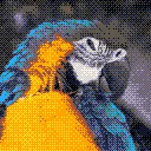

Dither cổ điển

Biến lớp thành đồ họa điểm ảnh cổ điển: mỗi khối điểm ảnh lấy một màu từ bảng màu, như bảng màu của máy chơi game hay máy tính cũ hoặc bảng màu bạn nhập, và kiểu dither trộn các màu trong bảng để tạo cảm giác có nhiều sắc độ hơn.
Cài đặt
| Cài đặt | Loại | Phạm vi | Mặc định |
|---|---|---|---|
| Bảng màu | Bảng màu | – | 16 màu |
| Dither | Lựa chọn | Không, Nhiễu, Bàn cờ, Bayer 2x2, Bayer 3x3, Bayer 4x4, Bayer 8x8, Chấm cụm 4x4, Chấm cụm 8x8, Đường ngang, Đường dọc, Đường chéo, Floyd-Steinberg, False Floyd-Steinberg, Sierra Lite, Fan, Shiau-Fan, Jarvis-Judice-Ninke, Stucki, Burkes, Sierra, Two-Row Sierra, Atkinson | Bayer 4x4 |
| Cường độ | Số | 0% đến 200% | 100% |
| Kích thước điểm ảnh | Số | 1 đến 64 | 2 |
| Trộn | Số | 0% đến 100% | 100% |